7 events, 13 points
Classroom
Learning beyond the lecture.
About my Classroom experiences
My Classroom experiences go beyond academic lessons and allow me to learn from orientations, lectures, workshops, and interactions with others. Through these activities, I hope to develop new skills, become more confident, and gain knowledge that will help me grow as a student and as an individual.
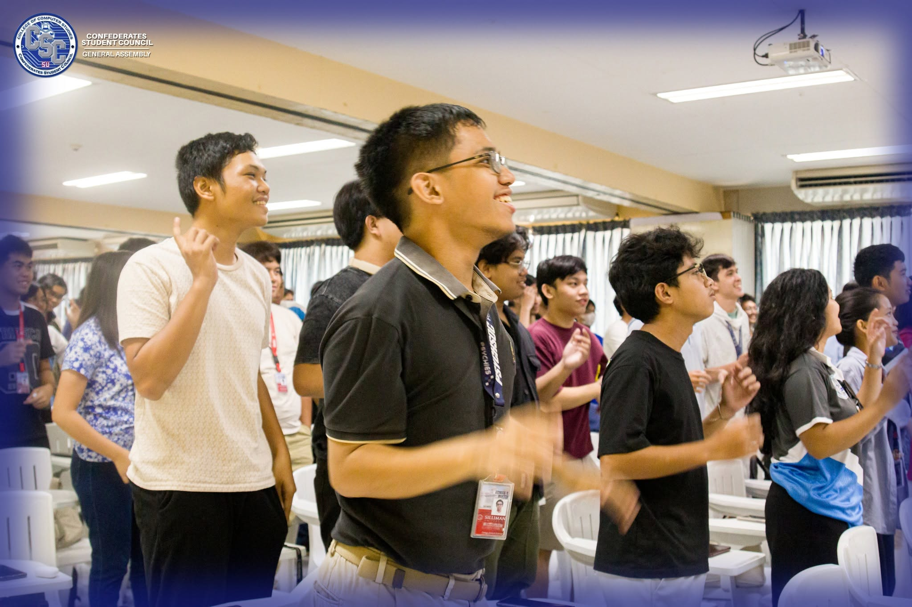
CCS General Assembly
June 17, 2026, 1:00 PM
1 point
CCS General Assembly
June 17, 2026, 1:00 PM 1 pointReflection
The CCS General Assembly introduced the faculty and staff of the College of Computer Studies, along with the members of the Confederates Student Council and the different committee chairpersons.
The event felt like a typical orientation, although the ₱750 council fee caught my attention the most. I felt bored, curious, excited, nervous, and happy all at once. More than anything, this was the moment when it finally hit me that I was really in college. I remember thinking, “Damn, college na jud diay ko.” It made me realize that I was starting a new chapter in my life, with new responsibilities and experiences ahead of me.
Moving forward, I want to participate more in CCS events and take the opportunities offered by the department. Aside from avoiding the fees associated with missing certain events, I also want to make the most of my college experience, get to know more people, and become more involved in the CCS community.
Because of this activity, I am more aware of my responsibilities as a college student and more encouraged to participate in CCS activities while making the most of my college journey.
Evidence of participation
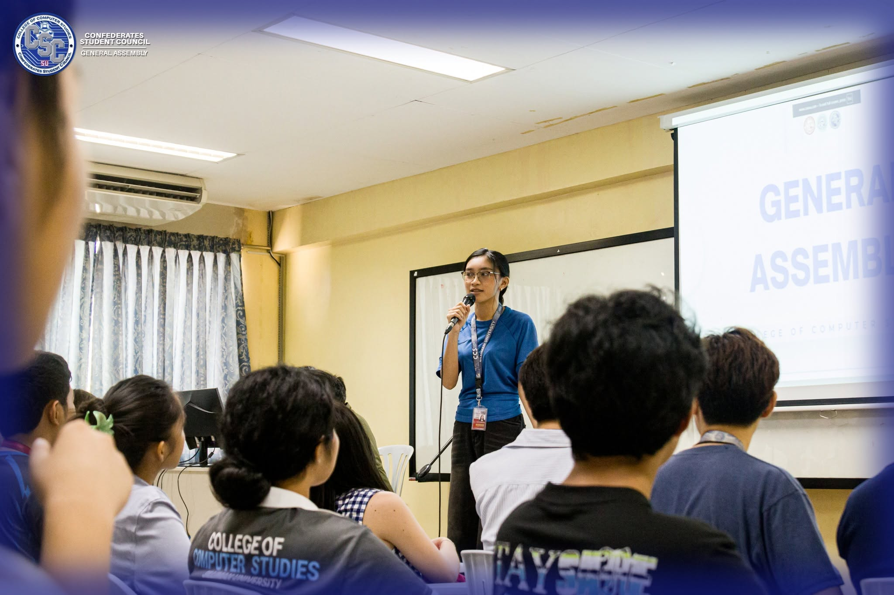
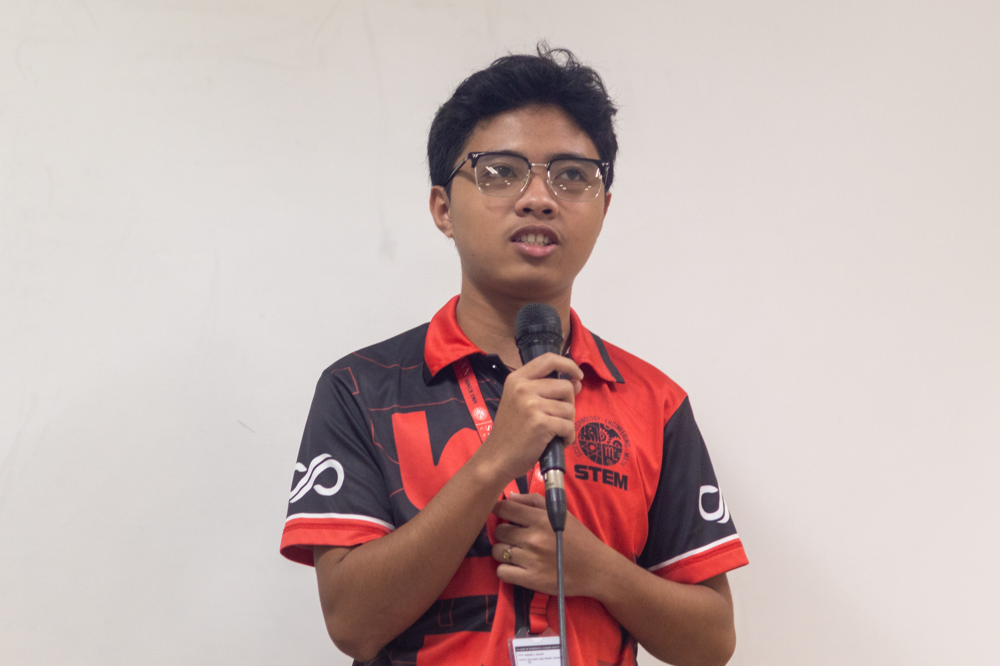
CCS Freshies Orientation
July 22, 2026, 9:00 AM
1 point
CCS Freshies Orientation
July 22, 2026, 9:00 AM 1 pointReflection
The CCS Freshies Orientation introduced us to the university and college policies, as well as the faculty and staff of the College of Computer Studies. We also had the opportunity to introduce ourselves to our fellow freshmen.
During the orientation, I felt both welcomed and nervous. It was a new environment, and I was still adjusting to college life and meeting new people. One important thing I learned was the 2.0 cutoff grade, which made me more aware of the academic expectations I needed to meet. I also got to know some of my fellow freshmen, even if it was only a little.
Moving forward, I want to make more friends both within and outside the College of Computer Studies. I know that college is not only about academics but also about meeting different people and learning from new experiences. I hope to become more comfortable approaching others and build connections as I continue my college journey.
Because of this activity, I am more familiar with the university and college policies, more aware of the academic expectations, and more motivated to make new friends as I adjust to college life.
Evidence of participation
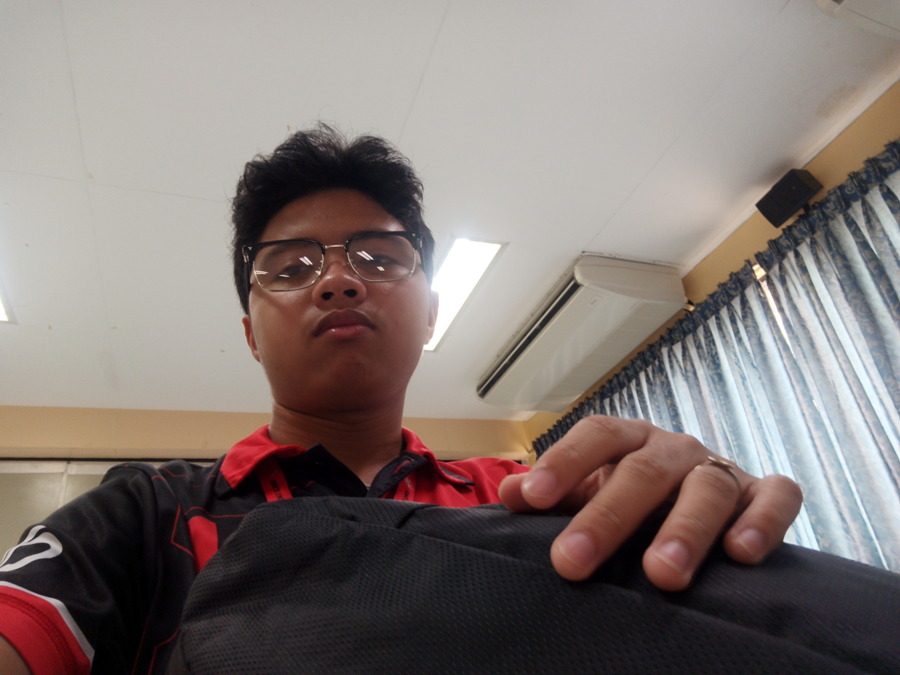
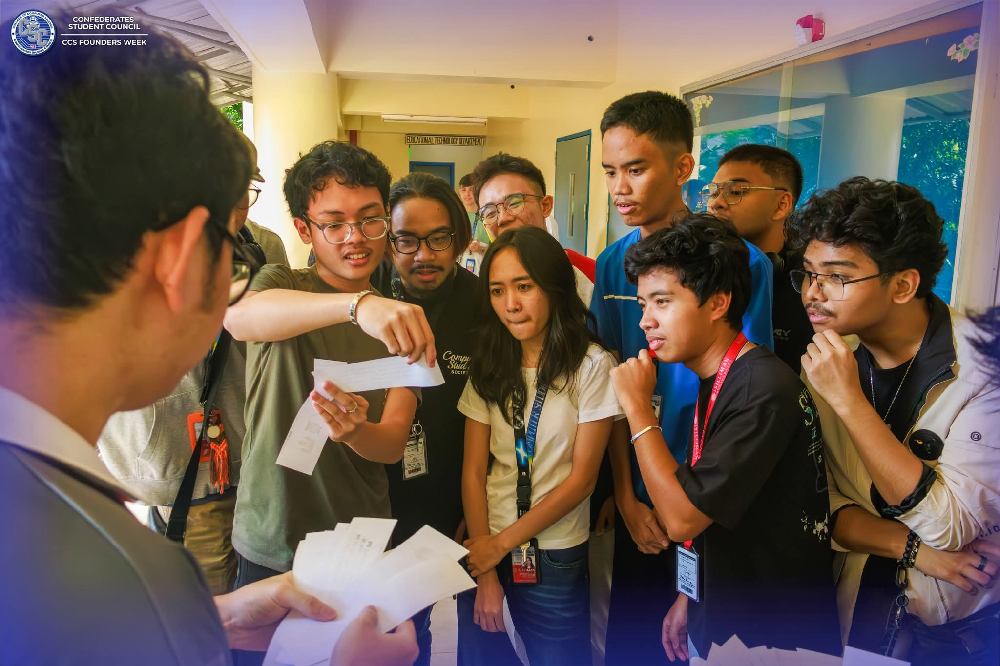
Book-Pursuit: An Amazing Race
August 24, 2026, 2:00 PM
4 points
Book-Pursuit: An Amazing Race
August 24, 2026, 2:00 PM 4 pointsReflection
On August 24, I participated in Book-Pursuit: An Amazing Book Story Race at ATA Hall with my friends and groupmates. We were divided into groups and given a random flow of stations to follow. At each station, we had to complete different challenges such as answering questions, matching items, or describing certain book and movie characters. After completing a station, we had to get the station name signed on our list before proceeding to the next one. Our group unfortunately ended up in last place. HAHAHA.
Although we finished last, I still enjoyed the activity because it combined physical and mental challenges. It was tiring having to go back and forth between the two UCS Computer Center buildings just to reach our designated stations, but it also made the game more exciting. Working together with my friends and groupmates made the experience even more enjoyable because we were able to figure out the challenges together while having fun along the way.
One thing I learned from the activity is that reading books and watching movies can actually be useful in situations like this. Some of the challenges required knowledge about characters and stories, which could have been easier if I read or watched more often. I normally do not spend much time reading books or watching movies, so the activity showed me that these things can also help develop knowledge that can be useful outside the classroom.
Because of this activity, I am more open to reading books and watching movies, knowing that the things I learn from them can also become useful in unexpected situations.
Evidence of participation
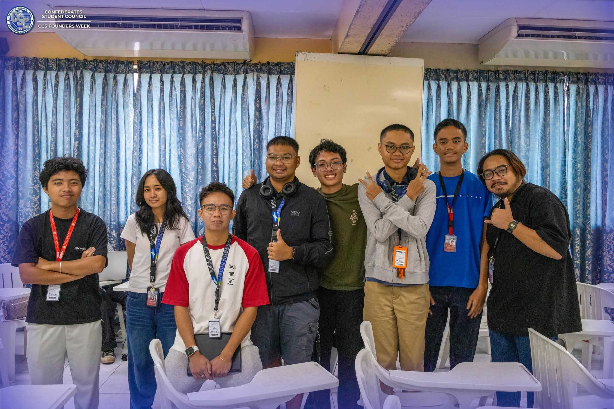
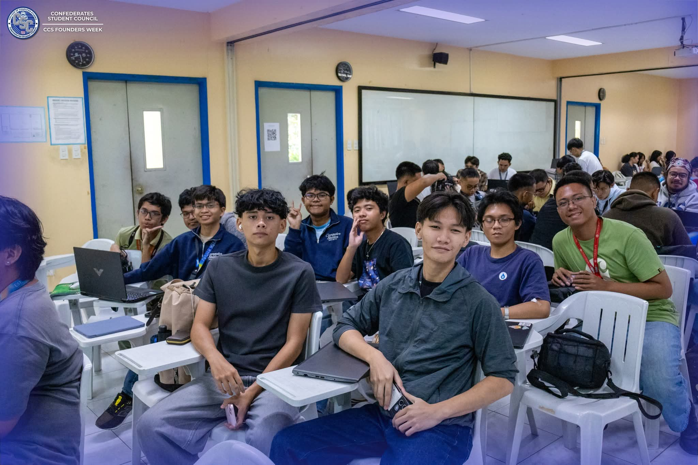
Miller Solutions Dev. Inc. Industry Lecture Series (Workshop)
August 25, 2026, 2:00 PM
1 point
Miller Solutions Dev. Inc. Industry Lecture Series (Workshop)
August 25, 2026, 2:00 PM 1 pointReflection
On August 25, I attended the Miller Solutions Dev. Inc. Industry Lecture Series Workshop at ATA Hall with my friends and other members of the CCS Department. During the workshop, we were taught how to create a web-based application using AI, specifically through Bolt.new. The speaker explained how the specificity of our prompts and the specifications we provide can affect the output generated by the AI. Our task was to create an application that could create events with information such as where, when, and what the event was, as well as delete events when needed.
I enjoyed the hands-on part of the workshop because we were able to actually apply what we were taught. My group successfully created the application using Bolt.new, and I was surprised by how good the output was. It was interesting to see how simply giving AI detailed instructions could result in a functional application.
However, the workshop also made me realize that knowing the fundamentals is still important even when using AI to develop software. AI can be very helpful, but we still need to understand how the code and applications work so we can fix errors, find bugs, and improve what AI produces. If I rely completely on AI without understanding the fundamentals, I might not know what to do when something goes wrong.
Because of this activity, I am more aware of the importance of understanding the fundamentals while using AI as a tool for development.
Evidence of participation
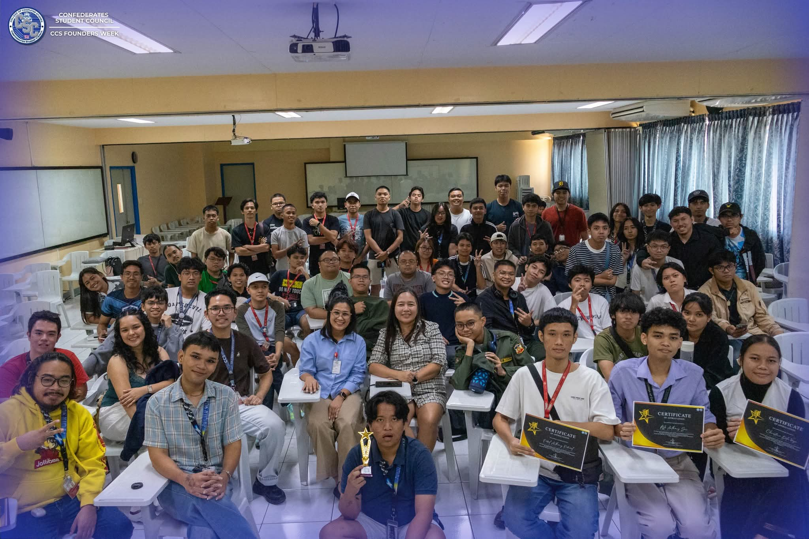
Tawag ng Tanggalan
August 26, 2026, 9:00 AM
1 point
Tawag ng Tanggalan
August 26, 2026, 9:00 AM 1 pointReflection
On August 26, I attended Tawag ng Tanggalan at ATA Hall as one of the audience members. The activity was basically the opposite of a normal singing competition because instead of looking for the best singer, the goal was to find the best worst singer. The performers intentionally or unintentionally sang off-key, which made the activity very different from the usual competitions. I watched the performances together with other CCS students and faculty members.
What I enjoyed most was how entertaining the performances were because everyone was just having fun with the concept. One moment that really stuck with me was when one of the performers sang Golden by HUNTR/X and literally said “ha?” during the Korean part of the song. All of the performers were off-key, but that was exactly what made the activity funny and enjoyable. It was a simple activity, but the audience was clearly having a good time watching everyone perform.
The activity made me realize that the CCS Department is actually a really fun community. Although the courses can be stressful, the people and activities within the department can make college life more enjoyable. It also showed me that not every activity has to be serious or academic to bring students together. Sometimes, simply having fun and laughing together can also create a good experience, and I would definitely like to experience more activities like this in the future.
Because of this activity, I am more appreciative of the fun and welcoming environment within the CCS Department.
Evidence of participation
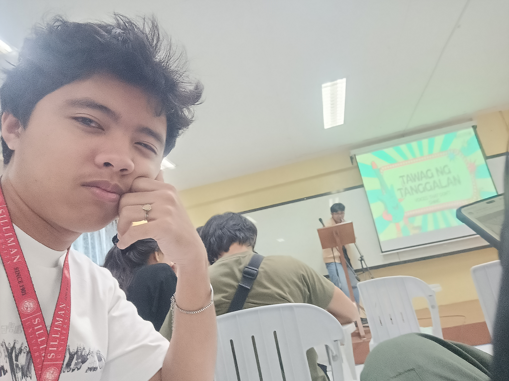
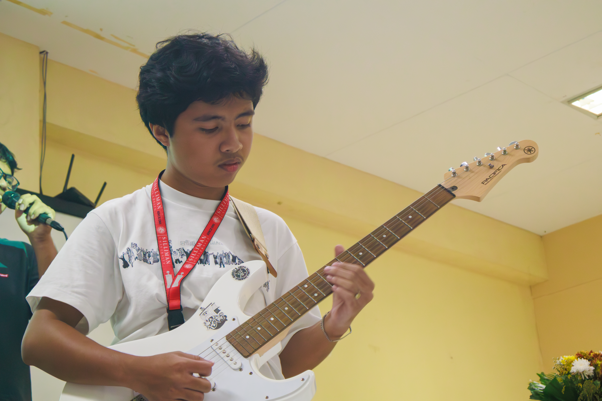
CCS Founders Week: Balik-Talent Lecture
August 26, 2026, 2:00 PM
4 points
CCS Founders Week: Balik-Talent Lecture
August 26, 2026, 2:00 PM 4 pointsReflection
On August 26, I attended the Balik-Talent Lecture at ATA Hall with other CCS students, faculty, staff, professors, and instructors. The lecture focused on Artificial Intelligence and its impact on the technology industry. One part that really stood out to me was when Ms. Alyssa L. Palencia, CEO of Miller Solutions Development Inc. and a Silliman BSIT graduate from 2018, talked about her journey as an IT student. She shared that she was once crowned Ms. Silliman, but also experienced moments where she broke down because of how stressful the IT program could be. Hearing that made me realize that even successful people in the industry experienced struggles while they were still students.
One thing I learned from the lecture is that AI cannot replace IT and Computer Science professionals—at least not yet. IT and CS professionals are still the ones responsible for developing, improving, and creating the technologies behind AI. It also made me realize that being an IT student can be difficult, but struggling along the way does not mean that I cannot succeed in the future.
Aside from the lecture, I also performed with disBanded as an intermission number. We played two songs, Pasilyo and You Belong with Me. I played lead guitar, Chas played rhythm guitar, while Vincent and Leslie handled the vocals. Performing in front of the CCS community was genuinely fun, especially when the crowd started cheering and singing along with us. It made the performance feel more exciting and reminded me why I enjoy playing music with other people.
Because of this activity, I am more motivated to continue improving both my skills in IT and my confidence in performing.
Evidence of participation
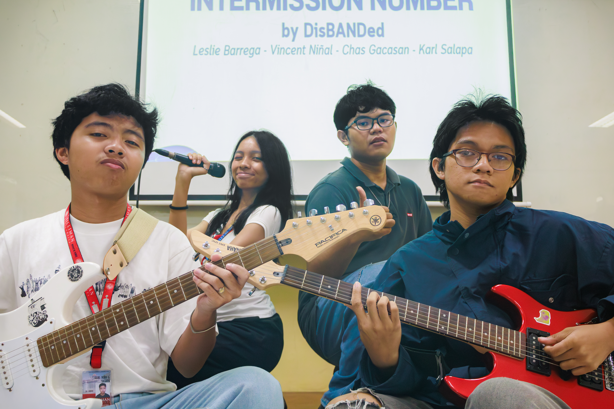
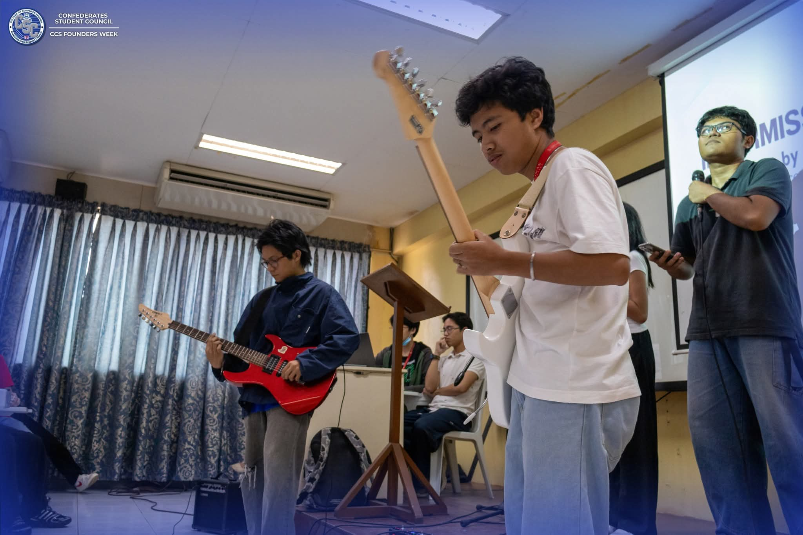
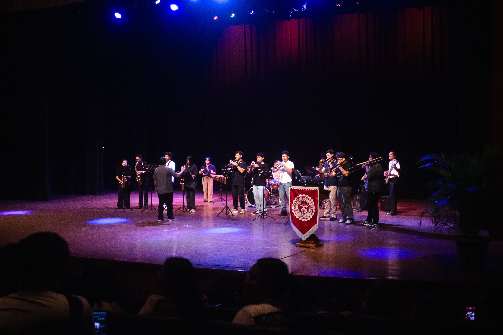
Mental Health Caravan: Building a Mental Health Toolkit
September 16, 2026, 2:00 PM
1 point
Mental Health Caravan: Building a Mental Health Toolkit
September 16, 2026, 2:00 PM 1 pointReflection
The Mental Health Orientation, led by Dr. Stephanie D. Miaco, discussed the importance of mental health and ways to cope when experiencing difficulties. It reminded us that mental well-being is an important part of our lives, especially as students who may face different challenges.
One quote that stood out to me was, “Dressing well is an act of self-respect, it's your daily dose of empowerment.” Before, I would usually just wear whatever I could find in my closet without thinking much about it. However, the quote made me realize that the way we present ourselves can influence the first impressions people have of us. It also reminded me that taking care of ourselves can be a form of self-respect.
Although I felt bored at some points, I was also interested in what the speaker had to say. Another thing I realized was that helping someone can be difficult if they are not willing to accept help. As college students, we may experience different struggles, so understanding ourselves and the people around us is important.
Moving forward, I want to be more mindful of my mental well-being and how I handle challenges. I also want to be careful when choosing the people I surround myself with, since friends can greatly influence our college experience, especially when we are still adjusting to college life. At the same time, I want to remember that while we can support others, they also need to be willing to help themselves.
Because of this activity, I am more aware of the importance of mental health, self-respect, and having a supportive circle of friends as I continue adjusting to college life.